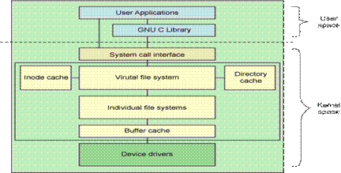

如清单 4 所示，还可以继续这个过程：在刚才挂装的文件系统中创建一个新文件，将它与一个循环设备关联起来，再在上面创建另一个文件系统。
清单 4. 在循环文件系统中创建一个新的循环文件系统
$ dd if=/dev/zero of=/mnt/point1/file.img bs=1k count=1000
1000+0 records in
1000+0 records out
$ losetup /dev/loop1 /mnt/point1/file.img
$ mke2fs -c /dev/loop1 1000
mke2fs 1.35 (28-Feb-2004)
max_blocks 1024000, rsv_groups = 125, rsv_gdb = 3
Filesystem label=
...
$ mkdir /mnt/point2
$ mount -t ext2 /dev/loop1 /mnt/point2
$ ls /mnt/point2
lost+found
$ ls /mnt/point1
file.img lost+found
$
通过这个简单的演示很容易体会到 Linux 文件系统（和循环设备）是多么强大。可以按照相同的方法在文件上用循环设备创建加密的文件系统。可以在需要时使用循环设备临时挂装文件，这有助于保护数据。
问题：如何体现其是作为一种协议的呢？
既然已经看到了文件系统的构造方法，现在就看看 Linux 文件系统层的体系结构。本文从两个角度考察 Linux 文件系统。首先采用高层体系结构的角度。然后进行深层次讨论，介绍实现文件系统层的主要结构。
尽管大多数文件系统代码在内核中（后面讨论的用户空间文件系统除外），但是图 2-1 所示的体系结构显示了用户空间和内核中与文件系统相关的主要组件之间的关系。

图 2-1 Linux 文件系统组件的体系结构
（1）用户空间包含一些应用程序（例如，文件系统的使用者）和 GNU C 库（glibc），它们为文件系统调用（打开、读取、写和关闭）提供用户接口。
（2）系统调用接口的作用就像是交换器，它将系统调用从用户空间发送到内核空间中的适当端点。
（3）VFS 是底层文件系统的主要接口。这个组件导出一组接口，然后将它们抽象到各个文件系统，各个文件系统的行为可能差异很大。有两个针对文件系统对象的缓存（inode 和 dentry）。它们缓存最近使用过的文件系统对象。
（4）每个文件系统实现（比如 ext2、JFS 等）导出一组通用接口，供 VFS 使用。缓冲区缓存会缓存文件系统和相关块设备之间的请求。例如，对底层设备驱动程序的读写请求会通过缓冲区缓存来传递。这就允许在其中缓存请求，减少访问物理设备的次数，加快访问速度。以最近使用（LRU）列表的形式管理缓冲区缓存。注意，可以使用 sync 命令将缓冲区缓存中的请求发送到存储媒体（迫使所有未写的数据发送到设备驱动程序，进而发送到存储设备）。
块设备就是以块（比如磁盘扇区）为单位收发数据的设备，它们支持缓冲和随机访问（不必顺序读取块，而是可以在任何时候访问任何块）等特性。块设备包括硬盘、CD-ROM 和 RAM 盘。与块设备相对的是字符设备，字符设备没有可以进行物理寻址的媒体。字符设备包括串行端口和磁带设备，只能逐字符地读取这些设备中的数据。
这就是 VFS 和文件系统组件的高层情况。现在，讨论实现这个子系统的主要结构。
Linux 以一组通用对象的角度看待所有文件系统。这些对象是超级块（superblock）、inode、dentry 和文件。超级块在每个文件系统的根上，超级块描述和维护文件系统的状态。文件系统中管理的每个对象（文件或目录）在 Linux 中表示为一个 inode。inode 包含管理文件系统中的对象所需的所有元数据（包括可以在对象上执行的操作）。另一组结构称为 dentry，它们用来实现名称和 inode 之间的映射，有一个目录缓存用来保存最近使用的 dentry。dentry 还维护目录和文件之间的关系，从而支持在文件系统中移动。
VFS 作为文件系统接口的根层。VFS 记录当前支持的文件系统以及当前挂装的文件系统。可以使用一组注册函数在 Linux 中动态地添加或删除文件系统。内核保存当前支持的文件系统的列表，可以通过 /proc 文件系统在用户空间中查看这个列表。这个虚拟文件还显示当前与这些文件系统相关联的设备。在 Linux 中添加新文件系统的方法是调用register_filesystem。这个函数的参数定义一个文件系统结构（file_system_type）的引用，这个结构定义文件系统的名称、一组属性和两个超级块函数。也可以注销文件系统。
在注册新的文件系统时，会把这个文件系统和它的相关信息添加到 file_systems 列表中（图 2-2 和 linux/include/linux/mount.h）。这个列表定义可以支持的文件系统。在命令行上输入 cat /proc/filesystems，就可以查看这个列表。